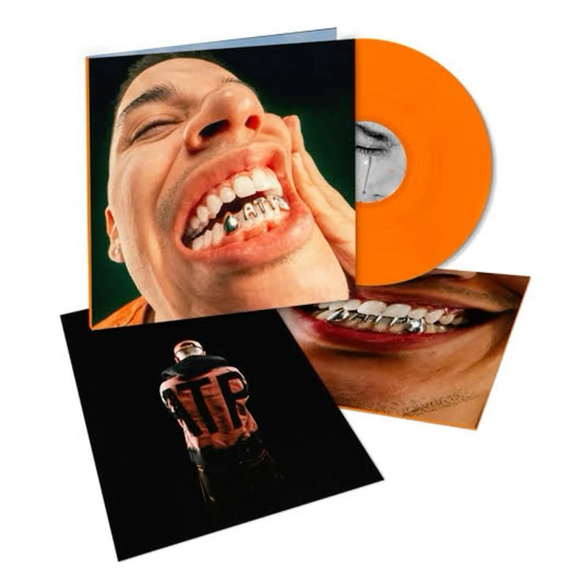
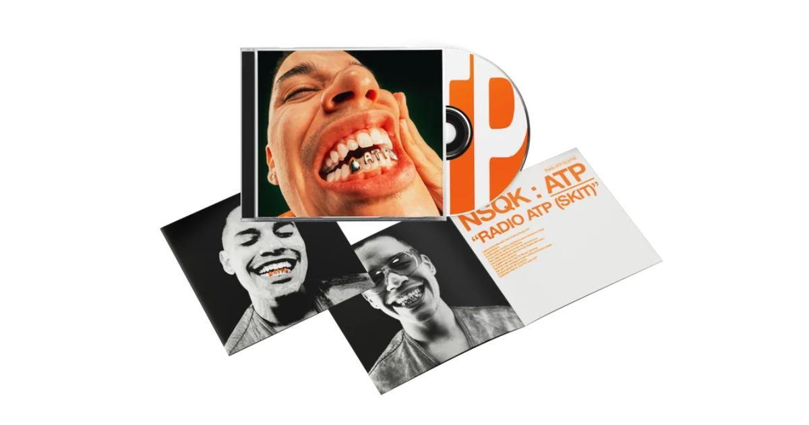
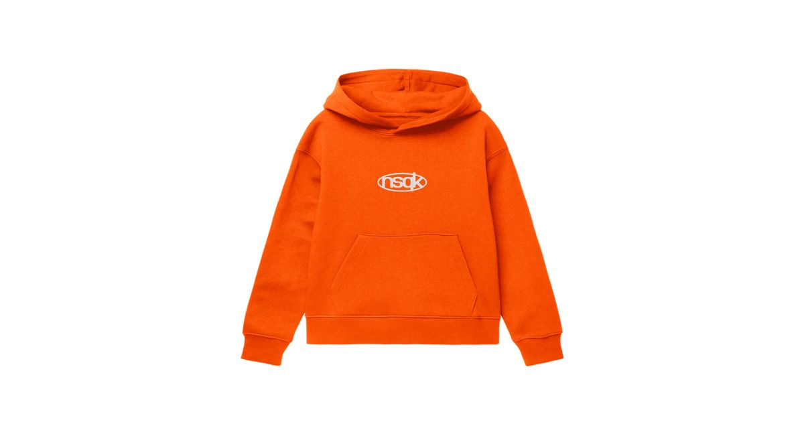
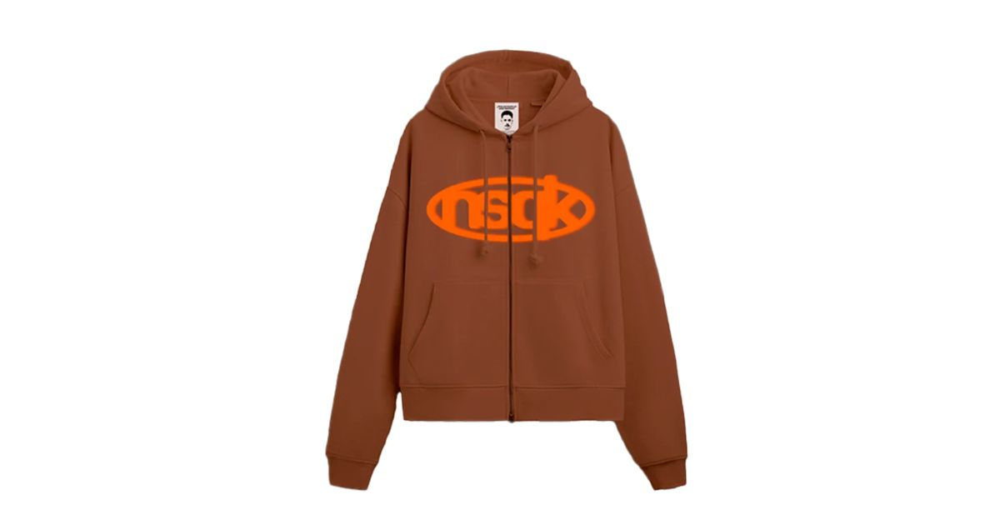
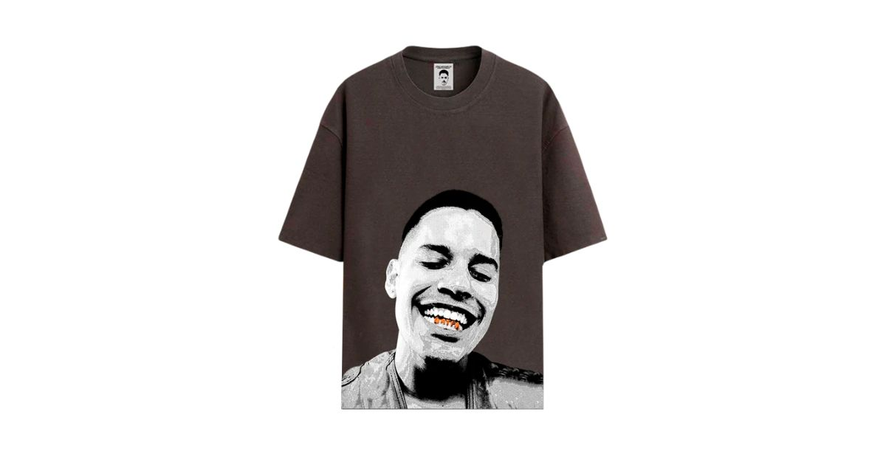
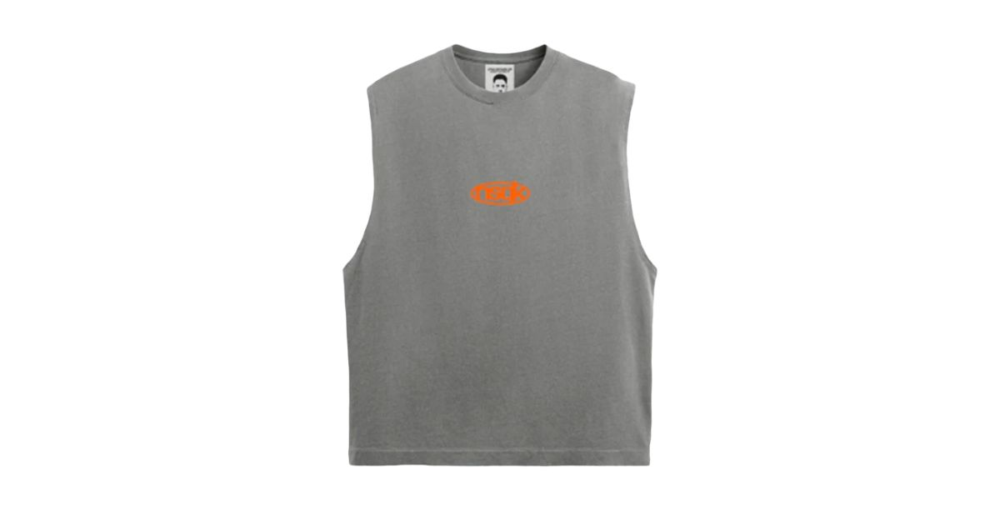
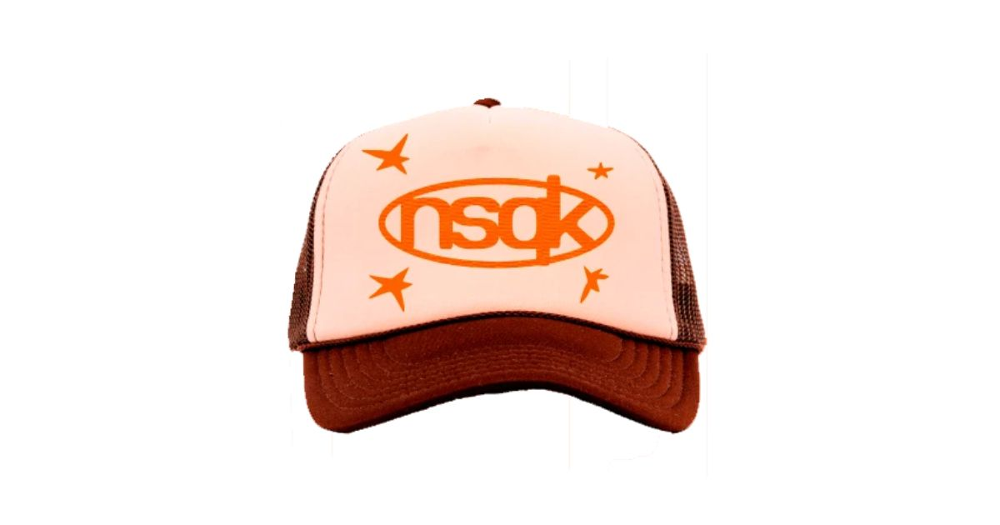
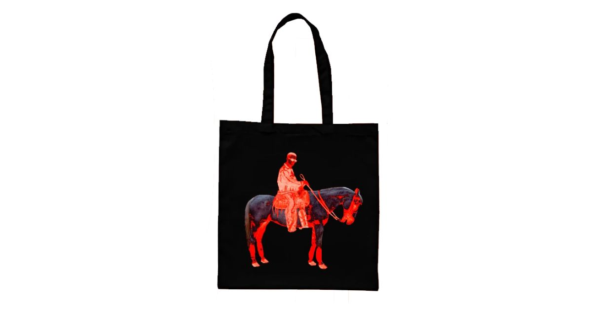
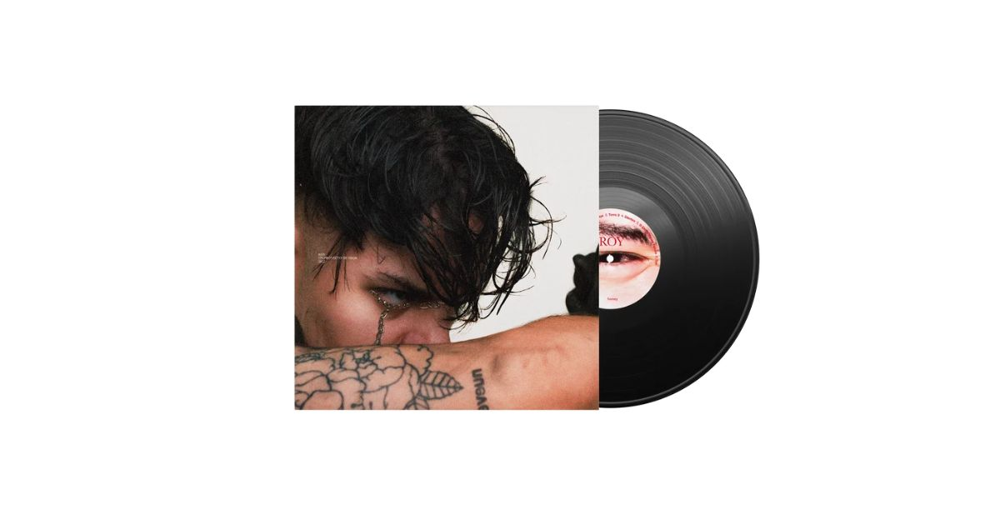

Rodrigo Torres de la Garza nació en Monterrey y creció en Houston. Empezó en el colectivo No Pedí Permiso y en el dúo Southboys, antes de lanzarse como solista.
Mezcla pop, rap, R&B, rock y electrónica. Produce su propia música y cuida letras, sonido y estética para romper las barreras entre géneros.
Botánica (2020), Braille y Brailluxe (2021) y ROY (2022). En 2024 estrenó "misa" y cerró la era de ATP con "UGH" y "OTROS LUGARES".
Producir, escribir y no parecerse a nadie.
Braille es un EP colaborativo de NSQK y Méne, lanzado en 2021, que nació durante la pandemia, cuando ambos artistas tuvieron que aprender a comunicarse y crear música a distancia. Su nombre hace referencia al sistema de lectura táctil, simbolizando la comunicación y la conexión entre las personas incluso cuando no pueden estar físicamente juntas. A través de sus canciones, explora el amor, la amistad, el cariño, la vulnerabilidad y los recuerdos que compartimos con quienes son importantes para nosotros. Combina sonidos de pop alternativo, R&B y rap, creando una mezcla de emociones alegres, románticas y melancólicas. En general, Braille representa la importancia de conectar con otras personas, expresar lo que sentimos y mantener los vínculos a pesar de la distancia.
ROY de NSQK es su álbum debut y representa una etapa de introspección, cambios personales y crecimiento. A través de sus canciones, habla sobre el miedo a crecer, las inseguridades, las decepciones, el desamor y la aceptación de uno mismo. El nombre ROY representa un alter ego de Rodrigo Torres, una faceta más personal con la que explora emociones y pensamientos que forman parte de su historia. El álbum también refleja la idea de que crecer implica enfrentar el pasado, aceptar los cambios y aprender a soltar. Musicalmente, combina sonidos electrónicos, pop alternativo, rock y rap, mostrando una faceta experimental y diferente del artista. En general, ROY es una catarsis emocional en la que NSQK transforma experiencias difíciles en música y aprende a comprenderse mejor a sí mismo.
ROY EN VIVO de NSQK es un álbum en vivo grabado durante el cierre de su gira ROY TOUR 2023 en Monterrey, Nuevo León. Este proyecto presenta nuevas versiones de las canciones del álbum ROY, con arreglos diferentes que transmiten las emociones de una manera más intensa y cercana. Representa la conexión entre NSQK y su público, mostrando cómo sus experiencias personales, inseguridades, recuerdos y sentimientos cobran una nueva vida sobre el escenario. Además, incluye momentos especiales de la gira y canciones de su proyecto Botánica. En general, ROY EN VIVO permite experimentar la esencia emocional de ROY de una forma más auténtica, en la que la música, la energía del público y la interpretación del artista se unen.
ATP de NSQK significa “Aún Te Pienso”. Es un álbum que habla sobre la nostalgia, el amor, los recuerdos y las personas que, aunque ya no estén en nuestra vida de la misma manera, seguimos pensando en ellas. A través de sus canciones, NSQK expresa sentimientos, experiencias y etapas de crecimiento personal. El álbum está presentado como una estación de radio llamada Radio ATP, que conecta las canciones mediante conversaciones y segmentos que le dan una identidad propia. En general, representa la idea de que hay personas y momentos que nunca olvidamos por completo, aunque el tiempo siga pasando.
MOSCA de NSQK es un álbum que explora la ambición, el éxito y la transformación personal. Su concepto está inspirado en una experiencia del artista con una infestación de moscas y en La metamorfosis, de Franz Kafka, una obra que aborda los cambios en la identidad. Las moscas simbolizan los pensamientos, las presiones y los aspectos de la vida que muchas veces intentamos ignorar, pero que siguen presentes. A través de sus canciones, NSQK muestra la dualidad entre querer alcanzar la grandeza y el miedo a perderse a sí mismo en el proceso. En general, MOSCA representa cómo el éxito puede cambiar nuestra forma de ver el mundo, nuestras relaciones y nuestra propia identidad, recordándonos la importancia de no olvidar quiénes somos mientras perseguimos nuestros sueños.








